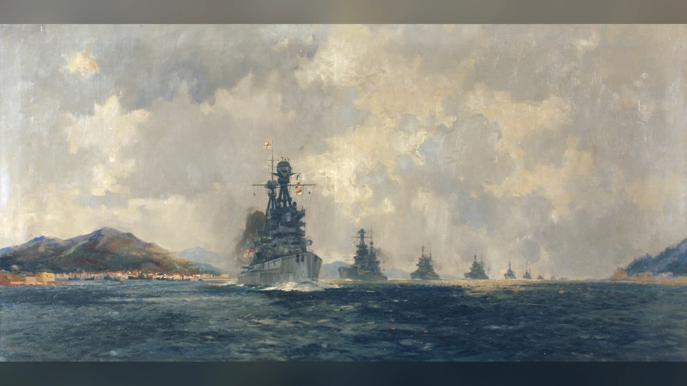
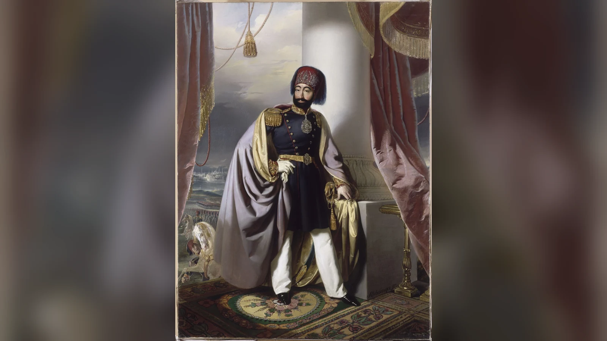
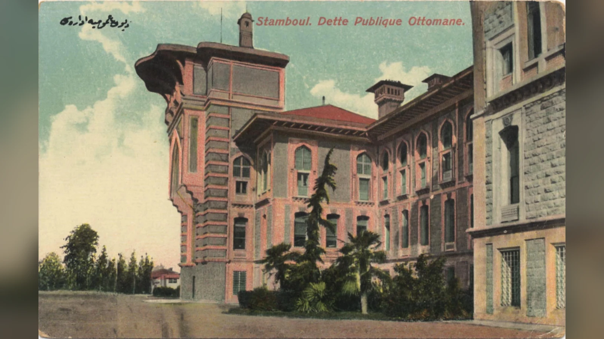
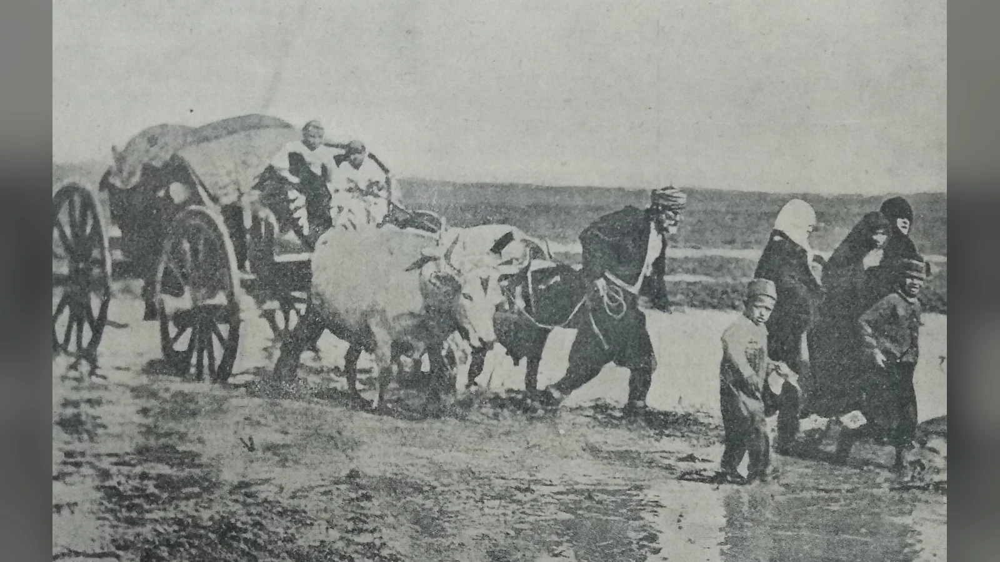
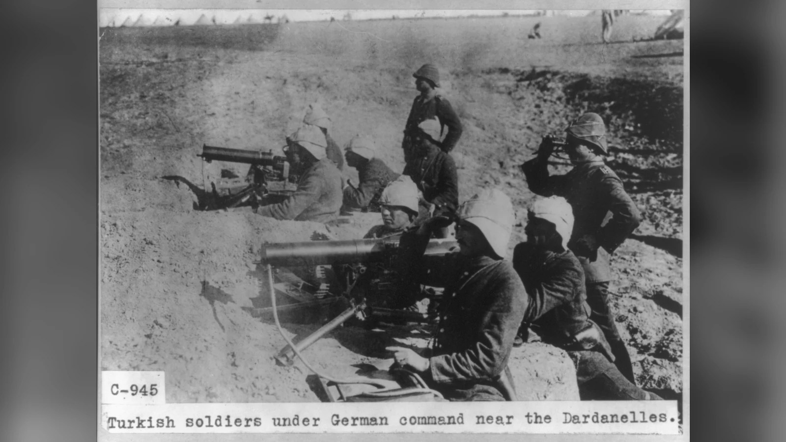
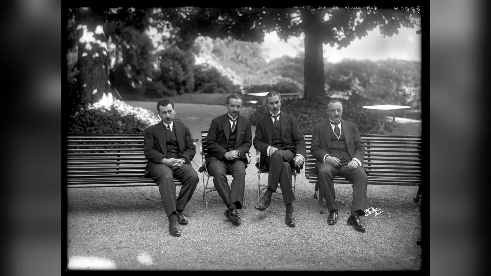

Osmanlı İmparatorluğu neden yıkıldı? Bunun cevabı, tek bir savaşın kaybedilmesinden veya tek bir yöneticinin hatasından daha geniştir. Osmanlı Devleti, Avrupa ve dünya siyasetindeki askerî ve ekonomik dönüşümlere uyum sağlamak için yüzyıllar boyunca kurumlarını değiştirdi. Ancak özellikle on dokuzuncu yüzyılda savaşların maliyeti, toprak kayıpları, büyük devletlerin müdahaleleri, merkezîleşme ile yerel talepler arasındaki gerilimler ve borç sorunları birbirini besledi. 1912–1913 Balkan Savaşları imparatorluğun Avrupa’daki konumunu ağır biçimde sarstı; Birinci Dünya Savaşı’ndaki yenilgi ise devletin elindeki toprakları ve siyasi hareket alanını daha da daralttı. 1918’de askerî yenilgi yaşandı, 1922’de saltanat kaldırıldı. Cumhuriyet’in 1923’te ilanı ve halifeliğin 1924’te kaldırılması ise yeni devletin kurumsal biçimini belirleyen ayrı aşamalardı.
Bu süreç düz bir çöküş çizgisi değildi. Osmanlı yönetimi çeşitli dönemlerde ordusunu yeniledi, vergi toplama yöntemlerini değiştirdi, okullar ve mahkemeler kurdu, ulaşım ağlarını genişletti ve uluslararası diplomaside yeni dengeler aradı. Bazı reformlar etkili oldu; bazıları yeni sorunlar yarattı. Devletin sonunu anlamak, neden hiç değişmediğini değil, neden gerçekleştirdiği değişikliklerin karşılaştığı siyasi ve askerî baskıları karşılamaya yetmediğini araştırmayı gerektirir.
Dahası, “Osmanlı’yı kim yıktı?” sorusu bazen açıklamadan çok bir suçlu arayışına dönüşür. Bir imparatorluğun dağılması, farklı bölgelerdeki insanların aynı nedenle hareket ettiği veya her kararın tek merkezden planlandığı anlamına gelmez. Balkanlar’daki bağımsızlık mücadeleleri, Arap vilayetlerindeki siyasi gelişmeler, Avrupa devletlerinin rekabeti, mali kurumların dönüşümü ve savaş yıllarındaki kararlar ayrı ayrı incelenmelidir. Bunların birbirine nasıl bağlandığı görüldüğünde Osmanlı’nın sona erişi daha anlaşılır hâle gelir.
Osmanlı İmparatorluğu Neden Yıkıldı? Tek Bir Sebep Neden Yetmez?
İmparatorlukların varlığını sürdürmesi, yalnız askerî zafer kazanmalarına bağlı değildir. Vergi toplayabilmeleri, asker yetiştirebilmeleri, farklı toplulukların taleplerini yönetebilmeleri, ticareti güvence altına alabilmeleri ve dış güçlerle ilişkilerini sürdürebilmeleri gerekir. Osmanlı Devleti uzun süre bu alanlarda etkili kurumlar kurdu. Fakat koşullar değiştikçe aynı kurumların maliyeti ve işlevi de değişti. Bir dönemde merkezî otoriteyi güçlendiren uygulama, başka bir dönemde taşrada tepki doğurabildi.
Örneğin uzun bir savaş yalnız cephede asker kaybı anlamına gelmiyordu. Askerî harcamalar hazineyi zorluyor, vergi yükü artıyor, üretim ve ticaret aksıyor, savaş bölgesinden göç eden insanlar yeni iskân ve yardım ihtiyacı doğuruyordu. Devlet mali sıkıntı yaşadığında ordusunu yenilemek için gerekli kaynakları bulmakta zorlanabiliyor; askerî yetersizlik yeni toprak kayıplarını hızlandırabiliyordu. Böylece ekonomi ile savaş arasında tek yönlü değil, karşılıklı bir ilişki oluşuyordu.
Toprak kaybı da yalnız haritanın küçülmesi değildi. Kaybedilen bölgelerdeki vergi gelirleri, tarım alanları, limanlar ve asker toplama imkânları azalabiliyordu. Buna karşılık kaybedilen topraklardan gelen Müslüman muhacirlerin barınma, beslenme ve yerleştirilme ihtiyaçları merkezî bütçeye yeni yükler getiriyordu. Devlet daha küçük bir coğrafyayı yönetirken bile daha ağır toplumsal sorunlarla karşılaşabiliyordu. Balkan Savaşları sonrasındaki göç dalgaları bu ilişkinin en belirgin örneklerindendir.
Bununla birlikte hiçbir etken her dönemde aynı ağırlıkta değildi. On yedinci yüzyıldaki para ve askerî örgütlenme sorunları ile on dokuzuncu yüzyıldaki dış borçlanma aynı mekanizma değildir. Fransız Devrimi sonrasındaki milliyetçilik hareketleri ile Birinci Dünya Savaşı’nın yarattığı askerî yıkım da farklı tarihsel bağlamlarda değerlendirilmelidir. Osmanlı’nın yıkılma nedenlerini anlamak için bunları tek bir uzun “bozulma” hikâyesine sıkıştırmak yerine, her dönemin kendine özgü sorunlarını ve bunların sonraki gelişmelere nasıl zemin hazırladığını incelemek gerekir.
Osmanlı Gerçekten Yüzyıllar Boyunca Sürekli Geriledi mi?
Geleneksel tarih anlatısında Osmanlı tarihi çoğu zaman kuruluş, yükseliş, duraklama, gerileme ve dağılma dönemlerine ayrılır. Bu sınıflandırma tarihleri hatırlamayı kolaylaştırsa da devletin karmaşık değişimini açıklamakta yetersiz kalır. Özellikle Kanuni Sultan Süleyman’dan sonraki yüzyılları kesintisiz bir çürüme süreci olarak görmek, Osmanlıların yeni koşullara uyum sağladığı dönemleri gözden kaçırır. Modern tarihçiler bu nedenle “gerileme modeli”nin sınırlarını tartışır.
On altıncı yüzyılın sonlarında Osmanlı yönetimi ciddi baskılarla karşılaştı. Uzayan savaşlar, para değerindeki dalgalanmalar, nüfus ve üretim ilişkilerindeki değişimler ile Anadolu’daki Celâlî hareketleri devlet düzenini zorladı. Ancak bu gelişmeler devletin hemen çözülmeye başladığı anlamına gelmedi. Yönetim yeni askerî ve mali yöntemlere yöneldi; taşradaki güç odaklarıyla ilişkiler yeniden düzenlendi. Eski kurumların değişmesi bazen kriz belirtisiydi, bazen de krize verilen cevaptı.
Örneğin timar düzeninin eski askerî ağırlığını kaybetmesi, bütün Osmanlı askerî kapasitesinin aynı anda yok olması demek değildi. Ateşli silahların yaygınlaşması ve ücretli asker ihtiyacının artması, Avrupa devletlerinde de görülen daha geniş bir askerî dönüşümün parçasıydı. Osmanlı yönetimi bu değişime yeni birlikler ve finansman yollarıyla karşılık verdi. Bu dönüşümün maliyetleri yüksekti; fakat sırf önceki model terk edildi diye her yeni uygulama başarısız sayılamaz.
On sekizinci yüzyılda da tek biçimli bir gerilemeden söz etmek güçtür. Yüzyılın ilk bölümlerinde bazı bölgelerde ticaret ve üretim genişledi, şehir ekonomileri canlılık kazandı. Sonraki yıllarda Rusya ile savaşlar ve taşra ilişkilerindeki gerilimler mali baskıyı artırdı. Ekonomi tarihçisi Şevket Pamuk’un çalışmalarında da vurgulanan bu dönemsel farklılık, Osmanlı’nın sürekli aynı hızda güç kaybettiği varsayımını zayıflatır. Askerî yenilgiler gerçekti; ancak bunlar her alanda eşzamanlı durgunluk bulunduğunu kanıtlamaz.
“Gerileme” sözcüğünün başka bir sorunu da sonuçtan geriye doğru tarih yazmayı teşvik etmesidir. İmparatorluğun 1922’de sona erdiğini bilen bir okuyucu, 1683’teki bir yenilgiyi veya 1774’teki bir antlaşmayı kaçınılmaz sonun ilk basamağı gibi görebilir. Oysa o dönemlerde Osmanlı yöneticileri farklı seçeneklere sahipti ve devlet uzun süre önemli askerî, mali ve diplomatik kaynakları elinde tuttu. Tarihsel açıklama, geçmişteki aktörlerin henüz bilmediği sonucu bütün kararların gizli amacı hâline getirmemelidir.
Avrupa’daki Askerî Değişim Osmanlı’yı Nasıl Etkiledi?
Avrupa’daki devletler erken modern çağ boyunca daha büyük ordular kurmak, toplarını ve piyade silahlarını geliştirmek, savaşların finansmanını sağlamak ve kalıcı askerî bürokrasiler oluşturmak için yeni yöntemler geliştirdi. Osmanlılar bu değişimlerin dışında değildi; ateşli silahları erken dönemlerden beri kullandılar ve askerî teşkilatlarını defalarca değiştirdiler. Sorun “Avrupa teknolojiyi buldu, Osmanlı hiç kullanmadı” gibi basit bir karşıtlıkla açıklanamaz. Fark giderek ordunun eğitimi, lojistiği, finansmanı ve sanayi üretimi gibi birbirine bağlı alanlarda belirginleşti.
1683 Viyana Kuşatması’nın başarısızlığı ve ardından gelen savaşlar Osmanlıların Orta Avrupa’daki konumunu ağır biçimde sarstı. 1699 Karlofça Antlaşması önemli toprak kayıplarını resmileştirdi. Ancak Karlofça’dan sonra Osmanlı devleti ortadan kalkmadı; sınır savunması, diplomasi ve askerî örgütlenme konularında yeni tercihler geliştirdi. Asıl mesele, uzun vadede Avrupa’nın büyük güçleriyle rekabetin daha maliyetli hâle gelmesiydi.
On sekizinci yüzyılda Rusya’nın yükselişi bu baskıyı artırdı. Karadeniz ve Balkanlar üzerinde genişleyen Rus nüfuzu, Osmanlıların kuzey sınırındaki güvenlik hesabını değiştirdi. 1768–1774 Osmanlı-Rus Savaşı ve Küçük Kaynarca Antlaşması, askerî ve diplomatik dengenin ne kadar zorlaştığını gösterdi. Antlaşmanın sonraki yorumları ve Rusya’nın Osmanlı Ortodoksları üzerindeki himaye iddiaları, iki devlet arasındaki ilişkilerde uzun süre etkili oldu. Fakat bu süreç de tek bir anlaşmayla imparatorluğun sonunun kesinleştiği anlamına gelmez.
III. Selim dönemindeki Nizâm-ı Cedîd girişimleri, yeni talim ve mali kaynaklarla orduyu güçlendirmeyi amaçlıyordu. II. Mahmud döneminde 1826’da Yeniçeri Ocağı’nın kaldırılması ise askerî reformun önündeki önemli bir kurumsal engeli ortadan kaldırdı. Bu olayın ardından modern askerî birlikler ve eğitim kurumları geliştirmek için daha geniş alan açıldı. Ancak bir kurumu kaldırmak, deneyimli subay, silah sanayisi, bütçe ve eğitim altyapısını bir gecede yaratmıyordu.
Askerî yenileşme yeni mali ihtiyaçlar doğurdu. Düzenli eğitim, teçhizat, nakliye ve maaşlar için daha güvenilir vergi gelirleri gerekiyordu. Bu da askerî reformu mali reformla, mali reformu taşra yönetimiyle ilişkilendirdi. Devletin savaş kapasitesini artırmak için merkezî denetimi güçlendirmesi, bazı yerel toplulukların eski ayrıcalıklarını ve gelir düzenlerini değiştirdi. Böylece dış rekabete karşı atılan adımlar içeride yeni pazarlık ve direnç alanları açabiliyordu.
Toprak Kayıpları İmparatorluğu Nasıl Zayıflattı?
Toprak kayıplarının etkisi, kaybedilen alanın büyüklüğünden ibaret değildi. Bir eyaletin ayrılması, devletin vergi tabanını, askerî güzergâhlarını, ticaret ağlarını ve sınır güvenliğini değiştirebiliyordu. Üstelik kaybedilen bölgelerin yerine yeni savunma hatları kurmak gerekiyordu. Bu nedenle bir yenilgi sonraki savaşların maliyetini de artırabiliyordu. İmparatorluğun küçülmesi her zaman yönetimi kolaylaştırmadı; bazı durumlarda kaynakları azaltırken yükümlülükleri büyüttü.
Yunan bağımsızlık hareketi ve 1820’lerdeki savaşlar, Osmanlı egemenliği altında yaşayan toplulukların siyasi hedeflerinin değişebildiğini gösterdi. Ancak bütün Balkan hareketleri aynı anda başlamadı veya aynı toplumsal destekle gelişmedi. Sırbistan’daki özerklik süreci, Yunan bağımsızlığı, Bulgar hareketinin gelişimi ve Romanya’nın siyasi dönüşümü farklı yerel koşullara sahipti. Dış müdahaleler, dinî kurumlar, eğitim ağları ve yerel seçkinlerin çıkarları her yerde aynı ağırlıkta değildi.
1877–1878 Osmanlı-Rus Savaşı büyük bir dönüm noktasıydı. Osmanlı ordularının yenilgisi ve ardından gelen antlaşmalar Balkanlar’daki siyasi haritayı değiştirdi. Ayastefanos Antlaşması’nın öngördüğü düzen, 1878 Berlin Kongresi’nde yeniden ele alındı. Bu durum Osmanlı topraklarının kaderinin artık yalnız İstanbul ile karşısındaki tek devlet arasında belirlenmediğini gösterir. Avrupa güçleri birbirlerinin kazanımlarını sınırlamak için Osmanlı meselelerine müdahale ediyordu.
Berlin Antlaşması sonrasında Sırbistan, Romanya ve Karadağ’ın bağımsızlıkları uluslararası düzeyde tanındı; Bulgaristan için farklı statüler oluşturuldu. Bosna-Hersek’in Avusturya-Macaristan tarafından işgali ve yönetimi de Osmanlı egemenliğinin fiilî sınırlarını daralttı. 1908’de Avusturya-Macaristan’ın Bosna-Hersek’i ilhakı, zaten kırılgan olan bölgesel dengeleri yeniden sarstı. Böylece toprak kayıpları bir defalık askerî sonuç olmaktan çıkıp uzun süreli diplomatik krizler üretti.
Savaşların toplumsal bedeli de büyüktü. Balkanlar’dan Anadolu’ya ve İstanbul’a yönelen Müslüman muhacirler yerleşim, toprak, sağlık ve geçim sorunlarıyla karşılaştı. Göç edenlerin yaşadığı şiddet ve kayıplar, Osmanlı toplumunda güvenlik ve aidiyet tartışmalarını derinleştirdi. Buna karşılık Balkan devletlerinin kuruluş süreçleri de farklı dinî ve etnik topluluklar için zorunlu göç ve dışlanma üretebildi. Bu karmaşık deneyimi tek bir topluluğun sürekli fail, diğerinin sürekli mağdur olduğu değişmez bir hikâyeye dönüştürmek tarihsel gerçeği daraltır.
Milliyetçilik Osmanlı İmparatorluğu’nu Nasıl Etkiledi?
Milliyetçilik, imparatorluğun çok topluluklu siyasi düzenini zorlayan önemli gelişmelerden biriydi. Ancak “milliyetçilik çıktı ve herkes ayrılmak istedi” ifadesi hem kronolojiyi hem de topluluklar arasındaki farkları siler. Ulusal kimlikler eğitim, basın, dil, dinî kurumlar, yerel siyaset ve uluslararası ilişkiler içinde farklı hızlarda gelişti. Osmanlı yönetimi de bu hareketlere her dönemde aynı yöntemle karşılık vermedi.
Balkanlar’da bağımsızlık hareketleri çoğu zaman yerel toplumsal ağlarla ve komşu devletlerin desteğiyle güç kazandı. Ortodoks kiliselerinin kurumsal yapısı, eğitim kurumları ve şehirli seçkinlerin siyasal talepleri bazı hareketlerde belirleyici oldu. Buna rağmen bir bölgedeki bütün insanların tek siyasi hedefte birleştiği varsayılamaz. Aynı şehirde Osmanlı düzeninin sürmesini isteyenler, özerklik arayanlar ve bağımsızlık isteyenler bir arada bulunabiliyordu.
Osmanlı yönetiminin buna verdiği cevaplardan biri ortak bir Osmanlı vatandaşlığı fikrini güçlendirmekti. Tanzimat döneminde hukuki eşitlik ve ortak siyasi aidiyet arayışları, dinî farklılıkları aşan bir bağlılık oluşturmayı hedefledi. Ancak yeni eşitlik ilkelerinin uygulanması, farklı toplulukların beklentileri ve Avrupa devletlerinin müdahaleleri arasında ciddi gerilimler doğdu. Devletin ortak vatandaşlık yaratma çabası, farklı siyasi projelerin ortaya çıkmasını bütünüyle durduramadı.
Arap vilayetlerinin durumu Balkanlar’la aynı değildir. On dokuzuncu yüzyılın sonlarında Arapça basın, eğitim ve kültürel canlanma gelişirken bu hareketlerin bütün temsilcileri bağımsızlık istemiyordu. Osmanlıcılık, yerel özerklik ve imparatorluk içinde reform gibi seçenekler de tartışılıyordu. Birinci Dünya Savaşı sırasında Hicaz’da Şerif Hüseyin önderliğinde başlayan 1916 Arap İsyanı, bütün Arap toplumlarının ortak ve eşzamanlı ayaklanması olarak anlatılamaz. Birçok Arap kökenli Osmanlı askeri ve görevlisi savaş boyunca Osmanlı kurumlarında hizmet etmeyi sürdürdü.
Milliyetçilik ile merkezîleşme arasındaki ilişki de iki yönlüydü. Devlet vergileri, askerliği ve eğitimi daha düzenli yönetmek için taşradaki yetkilerini artırmaya çalışırken bazı yerel seçkinlerin hareket alanını daralttı. Bu değişim, imparatorluğun gücünü artırmak amacıyla yapılıyordu; fakat yerel çıkarları etkilediğinde direnç doğurabiliyordu. Merkezîleşme her yerde ayrılıkçılık üretmedi, ancak bazı bölgelerde siyasal taleplerin sertleşmesine katkıda bulundu.
Tanzimat ve Reformlar Neden Dağılmayı Durduramadı?
1839 Tanzimat Fermanı ve 1856 Islahat Fermanı, Osmanlı yönetiminin hukuk, idare ve toplumsal ilişkileri yeniden düzenleme çabasının önemli aşamalarıydı. Bu belgeler can ve mal güvenliği, vergi düzeni, askerlik ve tebaa arasındaki hukuki ilişkiler konusunda yeni ilkeler ortaya koydu. Ancak fermanların ilan edilmesiyle uygulamaların bütün vilayetlerde aynı anda ve aynı biçimde gerçekleştiği düşünülmemelidir. Merkezî hükümetin kapasitesi, yerel dirençler ve mali kaynaklar reformların sonuçlarını etkiledi.
Tanzimat döneminde yeni meclisler, bürokratik usuller, mahkemeler ve eğitim kurumları geliştirildi. Vilayet idaresini yeniden düzenleyen 1864 Vilayet Nizamnâmesi gibi girişimler merkez ile taşra arasındaki ilişkileri daha standart hâle getirmeyi amaçladı. Telgraf ve demiryolu ağlarının genişlemesi de merkezî yönetimin bilgi ve insan hareketini daha hızlı izlemesine yardımcı oldu. Bunlar başarısızlıkla sonuçlanmış boş girişimler değil, sonraki devlet kurumlarının oluşumunda iz bırakan dönüşümlerdi.
Ancak reformların başarıları imparatorluğun karşılaştığı dış baskıları ortadan kaldırmadı. Yeni ordu ve bürokrasi daha düzenli finansman gerektiriyordu. Modern okullar ve ulaşım yatırımları uzun vadede fayda sağlayabilirken kısa vadede harcamaları artırıyordu. Vergi toplama kapasitesini yükseltmek için yapılan düzenlemeler ise bazı bölgelerde eski çıkar ilişkilerini bozuyordu. Reform böylece aynı anda hem devletin araçlarını güçlendiriyor hem de siyasi ve mali gerilim yaratabiliyordu.
23 Aralık 1876’da Kanûn-ı Esâsî ilan edilerek meşrutiyet düzenine geçildi; Osmanlı parlamentosu ise 19 Mart 1877’de açıldı. Anayasanın ilanı ile meclisin fiilen çalışmaya başlaması ayrı tarihlerdir. II. Abdülhamid, Osmanlı-Rus Savaşı’nın yarattığı askerî ve siyasi kriz sırasında, Şubat 1878’de meclisi süresiz tatil etti. Sonraki yıllarda merkezî idare, eğitim, haberleşme ve ulaşım alanlarında önemli gelişmeler yaşanırken siyasi muhalefet üzerindeki denetim de güçlendi. Okulların ve telgraf hatlarının genişlemesi ile anayasal temsilin kesintiye uğraması aynı yönetimin farklı yüzleriydi; birini anlatırken diğerini dışarıda bırakmak dönemin işleyişini eksik gösterir.
1908’de II. Meşrutiyet’in yeniden yürürlüğe girmesi siyasal katılım ve temsil konusunda yeni umutlar yarattı. Fakat anayasal düzenin geri gelmesi imparatorluğun dış sorunlarını çözmedi. Bosna-Hersek’in ilhakı, Bulgaristan’ın bağımsızlığını ilan etmesi ve Girit meselesi gibi gelişmeler siyasi ortamı sarstı. 1909’daki krizler ve sonrasındaki iktidar mücadeleleri, meşrutiyetin varlığının tek başına kurumsal istikrar anlamına gelmediğini gösterdi.
Reformların sınırı burada belirginleşir: Devlet kurumlarını yenilemek, bütün uluslararası güç eşitsizliklerini veya birbirine zıt toplumsal talepleri aynı anda çözemezdi. Buna karşılık reformlar yapılmasaydı sorunların kesinlikle daha kolay çözüleceği de söylenemez. Daha gerçekçi değerlendirme, Osmanlı yönetiminin değişim kapasitesinin bulunduğu fakat bu değişimlerin savaş, borç ve toprak kaybıyla eşzamanlı yürütülmesinin maliyetli olduğudur.

Osmanlı Ekonomisi Neden Zorlandı?
Osmanlı ekonomisinin sorunlarını yalnız “ticaret yolları değişti” cümlesiyle açıklamak mümkün değildir. Coğrafi keşiflerin ardından dünya ticaretinin yönleri ve ölçeği değişti; fakat Akdeniz ve Osmanlı limanları ticari önemlerini bir anda kaybetmedi. Bölgesel ticaret ağları varlığını sürdürdü ve bazı Osmanlı şehirleri Avrupa ile ticaretten yararlandı. Asıl uzun vadeli mesele, değişen uluslararası ticaret koşullarında üretim, maliye ve askerî ihtiyaçlar arasındaki dengenin nasıl kurulacağıydı.
Sanayi Devrimi, özellikle on dokuzuncu yüzyılda bu dengeyi değiştirdi. Britanya başta olmak üzere sanayileşen ekonomiler seri üretim, makineleşme ve ulaşım maliyetlerindeki düşüş sayesinde bazı ürünlerde önemli rekabet avantajı kazandı. Osmanlı üreticileri ise bölgelere ve sektörlere göre farklı tepkiler verdi. Bazı zanaatlar ithal ürünlerle rekabette zorlandı; bazı tarım bölgeleri ihracat pazarları sayesinde büyüdü. “Osmanlı’da hiç sanayi yoktu” ifadesi bu farklılıkları gizler.
Kapitülasyonlar da dikkatle değerlendirilmelidir. Başlangıçta belirli yabancı tüccarlara tanınan ticari ve hukuki ayrıcalıklar, Osmanlı diplomasisinin ve ticaret politikasının araçlarıydı. Bunların sonraki yüzyıllarda Avrupa devletlerinin etkisi arttıkça daha farklı sonuçlar doğurması mümkündü. Ancak on altıncı yüzyıldaki bir ayrıcalığı on dokuzuncu yüzyıldaki ekonomik bağımlılıkla aynı koşullarda değerlendirmek anakronik olur. Ticari ilişkilerde güç dengesi değiştikçe ayrıcalıkların anlamı da değişti.
1838 Balta Limanı Ticaret Antlaşması, Osmanlı-Britanya ticari ilişkilerinde önemli dönemeçlerden biridir. Antlaşma iç ticaretteki bazı tekel ve kısıtlamaları kaldıran düzenlemeler içeriyordu ve daha sonra başka devletlerle yapılan anlaşmalar için de örnek oldu. Bu gelişme Osmanlı ekonomisinin dış ticarete açılmasını hızlandırdı; ancak antlaşmanın bütün yerli üretimi tek başına yok ettiği iddiası araştırmaların sunduğu daha karmaşık tabloyu basitleştirir. Etkiler sektör, bölge ve zaman içinde değişti.
Mali sorunların merkezinde savaş giderleri bulunuyordu. Büyük ordular, silah alımları, ulaşım yatırımları ve bürokrasinin masrafları düzenli gelir gerektiriyordu. Vergi toplama yöntemlerinin modernleştirilmesi kolay değildi; çünkü devletin taşradaki gelir kaynakları yerel ilişkilerle iç içeydi. Para değerindeki dalgalanmalar ve bütçe açıkları, hem devletin harcamalarını hem de toplumun gündelik ekonomik hayatını etkileyebiliyordu.
Bu nedenle Osmanlı’nın ekonomik zayıflığını tek bir dış müdahale veya tek bir yanlış kararın sonucu saymak yerine, savaşların finansmanı ile dünya ekonomisine katılım biçiminin birlikte yarattığı baskı olarak görmek daha anlamlıdır. Avrupa’yla ticaret bazı bölgelerde gelir ve yatırım imkânı doğurdu; fakat sanayileşme ve sermaye birikimindeki eşitsizlikler devletin hareket alanını daraltabildi. Osmanlı maliyesinin asıl sorunu, değişen koşullarda sürekli artan yükümlülükleri güvenilir gelirlerle karşılamakta zorlanmasıydı.
Dış Borçlar ve Düyûn-ı Umûmiye Osmanlı’yı Nasıl Etkiledi?
Osmanlı Devleti ilk dış borcunu 1854’te Kırım Savaşı sırasında aldı. Borçlanma, savaş harcamalarını karşılamak için başvurulan bir finansman yöntemiydi. Başlangıçta dış krediye erişim devletin kısa vadeli kaynak sıkıntısını hafifletebiliyordu. Ancak sonraki yıllarda yeni borçların artması, eski yükümlülüklerin ödenmesi için de yeni finansman arayışlarını gündeme getirdi. Borçların koşulları, komisyonlar ve faiz yükleri mali hareket alanını giderek zorlaştırdı.
1870’lerin ortasında uluslararası finans koşullarının bozulması, Osmanlı bütçesindeki sorunlarla birleşti. Hükümet 1875’te borç ödemelerine ilişkin kısmi durdurma kararı aldı; 1876’da ödeme krizi daha da derinleşti. Bu olay bazen “Osmanlı iflas etti” diye anlatılır. Modern devletlerin borç ödeme güçlüğü ile özel bir şirketin tasfiye edilmesi aynı şey olmadığından, burada kastedilenin dış borç yükümlülüklerinin yerine getirilememesi olduğunu belirtmek gerekir. Devlet ortadan kalkmadı; mali ilişkileri yeniden düzenlemek zorunda kaldı.
1881 Muharrem Kararnâmesi ile Düyûn-ı Umûmiye İdaresi kuruldu. Bu kurum, belirli Osmanlı gelirlerini alacaklıların yararına toplama ve yönetme yetkisine sahipti. Yönetiminde büyük ölçüde yabancı alacaklıları temsil eden bir yapı bulunuyordu; çalışanlarının önemli bölümü ise Osmanlı tebaasındandı. Böylece mali egemenliğin bir kısmı, devletin doğrudan kontrolü dışındaki bir borç yönetim mekanizmasına bağlandı.
Düyûn-ı Umûmiye’nin yetkileri gündelik ekonomiye kadar uzanıyordu. Tuz ve tütün gelirleri, damga resmi, alkollü içkilerden alınan vergiler, balıkçılık vergileri ve belirli bölgelerin ipek öşrü, kuruma ayrılan başlıca kaynaklar arasındaydı. Bu düzen, tahsil edilen gelirin bir bölümünün hükümetin serbestçe harcayabileceği bütçeye girmeden borç ödemesine yönelmesi demekti. Bununla birlikte kurum bütün Osmanlı vergilerini toplamıyor, maliyenin tamamını yönetmiyordu. Egemenlik kaybının boyutunu anlamak için bütün gelirlerin ele geçirildiği iddiasına ihtiyaç yoktur: Düzenli ve değerli gelir kaynakları üzerindeki tasarrufun sınırlandırılması zaten önemli bir kısıtlamaydı.
Ekonomi tarihçisi Edhem Eldem’in çalışmaları bu ikili sonucu anlamak için önemlidir. Borç yönetimi düzeni, uluslararası finans çevreleriyle ilişkilerde bir ölçüde güven ve öngörülebilirlik yarattı. Aynı zamanda Avrupa alacaklılarının Osmanlı gelirleri üzerindeki kurumsal etkisini artırdı. Dolayısıyla Düyûn-ı Umûmiye’yi ne bütün sorunları çözen teknik başarı ne de tek başına imparatorluğu yıkan kurum olarak değerlendirmek gerekir.
Dış borçlar Osmanlı’nın Birinci Dünya Savaşı’na girmesini otomatik olarak belirlemedi. Devlet 1881’den sonra da onlarca yıl varlığını sürdürdü; yatırımlar ve yeni borçlanmalar devam etti. Ancak mali bağımlılık, savaş ve reform harcamalarının yönetilmesini zorlaştıran uzun vadeli sınırlardan biriydi. Mali egemenliğin daralması ile askerî ve diplomatik baskı arasındaki ilişki, imparatorluğun hareket alanını giderek karmaşıklaştırdı.

Büyük Devletlerin Rekabeti Osmanlı’yı Nasıl Sıkıştırdı?
On dokuzuncu yüzyılda Osmanlı toprakları Britanya, Rusya, Fransa, Avusturya-Macaristan ve daha sonra Almanya gibi güçlerin stratejik hesaplarında önemli yer tuttu. Boğazların denetimi, Akdeniz ticareti, Balkanlar’ın siyasi geleceği ve Orta Doğu’daki ulaşım güzergâhları bu rekabetin başlıca konularıydı. Ancak Avrupa devletleri her zaman aynı amaçla hareket etmedi. Birinin Osmanlı topraklarını genişlemesi için fırsat görmesi, diğerinin bölgesel dengeyi koruma isteğiyle çatışabiliyordu.
Kırım Savaşı bunun çarpıcı örneğidir. Osmanlı Devleti Rusya’ya karşı Britanya ve Fransa’nın desteğini aldı. Bu ittifak, Avrupa devletlerinin tamamının her zaman Osmanlı’nın parçalanmasını istediği iddiasını zayıflatır. Ancak dış destek bedelsiz değildi: savaş giderleri, borçlanma ve diplomatik beklentiler devletin yeni yükümlülüklerle karşılaşmasına yol açtı. Bir dış güçle kurulan ittifak kısa vadede güvenlik sağlarken uzun vadede başka bağımlılıklar doğurabiliyordu.
1878 Berlin Kongresi de benzer biçimde farklı çıkarların karşı karşıya geldiği bir diplomatik pazarlıktı. Rusya’nın Balkanlar’da aşırı güçlenmesini istemeyen devletler, Ayastefanos düzenini yeniden şekillendirdi. Osmanlı yönetimi bu rekabetten zaman zaman yararlanabildi; fakat kendi topraklarına ilişkin kararların büyük devletler arasında müzakere edilmesi egemenlik alanının ne kadar daraldığını gösterdi.
1881’de Fransa’nın Tunus’u işgali ve 1882’de Britanya’nın Mısır’ı işgali, Osmanlı egemenliğinin farklı biçimlerde zayıflamasına yol açtı. Mısır’ın hukuki statüsü ile fiilî yönetimi uzun süre birbirinden ayrıştı; bu nedenle Mısır’ı tek bir tarihte bütün yönleriyle Osmanlı’dan kopmuş saymak yanıltıcıdır. Bu tür örnekler imparatorluğun çözülmesinin yalnız antlaşmalarla değil, fiilî askerî ve idarî denetim kayıplarıyla da gerçekleştiğini gösterir.
Almanya’yla gelişen askerî ve ekonomik ilişkiler Osmanlı yöneticilerine yeni seçenekler sundu. Demiryolu projeleri ve askerî danışmanlık ilişkileri, Britanya ve Fransa dışındaki bir güçle denge kurma imkânı yaratıyordu. Fakat bu yakınlaşma da Osmanlı’nın bütün dış sorunlarını çözmedi. Büyük güçler arasında manevra yapabilmek için yeterli askerî ve mali kapasite gerekiyordu; devletin seçenekleri bu kaynaklarla sınırlıydı.
Trablusgarp Savaşı Osmanlı’nın Sonunu Nasıl Yaklaştırdı?
1911’de İtalya’nın Trablusgarp ve Bingazi’ye saldırması, Osmanlıların Kuzey Afrika’daki son doğrudan yönetim alanını hedef aldı. Bu savaş, donanma gücü ile uzak bir eyaleti savunma kapasitesi arasındaki bağı açık biçimde gösterdi. Mısır’ın Britanya denetiminde bulunması kara yoluyla düzenli asker gönderilmesini güçleştiriyor, İtalyan deniz üstünlüğü de doğrudan sevkiyatı sınırlıyordu. Mustafa Kemal ve Enver Bey gibi subaylar bölgeye farklı yollarla ulaşarak yerel kuvvetlerle direnişi örgütledi. Buna rağmen yerel başarılar, İstanbul’un bölgeye kesintisiz asker, silah ve ikmal ulaştırmasını sağlayamadı.
İtalya baskıyı yalnız Afrika kıyılarıyla sınırlamadı; Ege’de Rodos ve On İki Ada’yı da işgal etti. Osmanlı hükümeti böylece uzak eyaletin savunmasıyla ana deniz yollarının güvenliği arasında sıkıştı. 1912’de Balkan cephesindeki tehlikenin savaşa dönüşmesi, Trablusgarp’ta mücadeleyi sürdürmenin maliyetini daha da yükseltti. 18 Ekim 1912’de imzalanan Uşi Antlaşması’yla Osmanlı asker ve memurlarının Trablusgarp ile Bingazi’den çekilmesi kararlaştırıldı. Antlaşmadaki düzenlemelerle bölgenin İtalyan yönetimine geçmesi yolu açıldı; dinî bağlara ilişkin hükümler ise doğrudan idarî denetimin devam ettiği anlamına gelmiyordu.
Uşi’de adaların geri verilmesi de öngörülmüştü, fakat İtalyan işgali sona ermedi. Bu ayrıntı, diplomatik metin ile sahadaki güç ilişkilerinin her zaman örtüşmediğini gösterir. Osmanlı yönetimi Balkanlar’da çok daha yakın bir tehdide karşı kuvvet toplamak zorundayken önceki savaşın bütün sonuçlarını çözecek güce sahip değildi. Trablusgarp Savaşı, Balkan Savaşları ve Birinci Dünya Savaşı’nın birkaç yıl içinde birbirini izlemesi bu yüzden önemlidir: Ordu ve hazine bir savaştan çıkıp toparlanamadan yeni bir mücadeleye girdi. Son yıllardaki kırılganlığı açıklayan şey, her yenilgiyi ayrı bir olay saymaktan çok, bu birikmiş yorgunluğu hesaba katmaktır.
Balkan Savaşları Neden Bu Kadar Büyük Bir Kırılmaydı?
1912–1913 Balkan Savaşları Osmanlı Devleti’nin son yıllarında belirleyici kırılmalardan biridir. Balkan devletlerinin Osmanlı’ya karşı kurduğu ittifak, kısa sürede büyük toprak kayıplarına yol açtı. Osmanlı ordusunun seferberlik, komuta, ulaştırma ve siyasi koordinasyon sorunları yenilgiyi ağırlaştırdı. Bu savaşları yalnız “askerler savaşmadı” veya “tek bir komutan hata yaptı” diye açıklamak, ordunun kurumsal ve lojistik sorunlarını görmezden gelir.
Birinci Balkan Savaşı sırasında Osmanlıların Avrupa’daki topraklarının büyük bölümü elden çıktı. 30 Mayıs 1913 Londra Antlaşması, Osmanlı sınırını Midye-Enez hattına çekiyor ve Edirne’yi Osmanlı tarafında bırakmıyordu. Eski müttefiklerin birbirleriyle savaştığı İkinci Balkan Savaşı sırasında Osmanlı ordusu Edirne’yi geri aldı. 10 Ağustos 1913 Bükreş Antlaşması Balkan devletleri arasındaki paylaşımı düzenledi; Osmanlı Devleti bu antlaşmanın tarafı değildi. Osmanlı-Bulgar sınırının yeniden belirlenmesi ve Edirne’nin Osmanlı’da kalması, 29 Eylül 1913 İstanbul Antlaşması’yla düzenlendi. Bu farklı antlaşmaları tek bir sınır kararı gibi anlatmak, savaşın ikinci aşamasında gerçekleşen değişimi gözden kaçırır.
Savaşın en ağır sonuçlarından biri kitlesel göç ve sivillerin yaşadığı şiddetti. Balkanlar’dan gelen muhacirler İstanbul ve Anadolu’da yeni yerleşim sorunları doğurdu. Ailelerin parçalanması, tarımsal üretim düzenlerinin bozulması ve mülkiyet ihtilafları savaşın sona ermesinden sonra da devam etti. Böylece askerî yenilgi, devletin toplumsal ve mali kapasitesini uzun süre etkileyen bir krize dönüştü.
Balkan Savaşları siyasi yönetim üzerinde de etkili oldu. İttihat ve Terakki’nin devlet yönetimindeki ağırlığı arttı; 1913 Babıâli Baskını sonrasında siyasi iktidar daha dar bir kadroda toplandı. Ordunun yeniden düzenlenmesi ve güvenlik kaygıları, yaklaşan Avrupa savaşına ilişkin kararların alındığı ortamı etkiledi. Ancak Balkan yenilgisi, Osmanlı’nın Birinci Dünya Savaşı’na mutlaka girmek zorunda olduğu anlamına gelmiyordu. Savaş kararı ayrı koşullarda ve ayrı tercihlerle şekillendi.

Osmanlı Birinci Dünya Savaşı’na Neden Girdi?
1914’te Avrupa’da savaş başladığında Osmanlı Devleti uzun savaşlardan çıkmış, askerî ve mali bakımdan yıpranmış durumdaydı. Yöneticiler bir yandan toprak bütünlüğünü korumaya çalışıyor, diğer yandan büyük güçler arasında güvenilir destek arıyordu. Rusya’nın Boğazlar ve doğu sınırı bakımından yarattığı tehdit algısı, Almanya’yla yakınlaşmanın önemli nedenlerinden biriydi. Ancak Osmanlı yönetimi içinde savaşın zamanlaması ve taraf seçimi konusunda bütün aktörlerin aynı düşündüğü söylenemez.
2 Ağustos 1914’te Almanya ile gizli ittifak antlaşması imzalandı. Bununla birlikte ittifakın yapılması, Osmanlı ordusunun o gün doğrudan savaşa girdiği anlamına gelmez. Bir süre fiilî tarafsızlık görünümü sürdü. Alman savaş gemileri Goeben ve Breslau’nun Osmanlı hizmetine alınması, Yavuz ve Midilli adlarını alması ve Karadeniz’deki gelişmeler bu geçiş sürecinin önemli parçalarıydı.
29 Ekim 1914’te Osmanlı donanmasının Rusya’nın Karadeniz kıyılarına yönelik saldırıları, savaşa fiilî katılımın belirleyici eşiği oldu. Ardından Rusya, Britanya ve Fransa’yla savaş durumu ortaya çıktı. Alman ittifakı, seferberlik ve donanma harekâtı birbirine bağlı olmakla birlikte aynı kararın aynı tarihte gerçekleşen parçaları değildi. Harekâtın hangi emirlerle yürütüldüğü ve hükümet üyelerinin ne ölçüde bilgilendirildiği, olayın kaynaklarını inceleyen tarihçilerin tartıştığı konulardır. Osmanlı yönetimini bütün üyeleri aynı tercihi yapan tek bir irade gibi göstermek, karar alma sürecindeki görüş ayrılıklarını örter.
Osmanlı yöneticileri Almanya’nın askerî gücünden yararlanarak savaş sonrasında daha elverişli bir konuma ulaşabileceklerini düşündüler. Bu beklentinin hangi ölçüde gerçekçi olduğu tartışılabilir; fakat kararın verildiği anda savaşın 1918’de nasıl sonuçlanacağı bilinmiyordu. Savaşın sonucu üzerinden geriye giderek giriş kararını baştan kesin bir intihar olarak sunmak, dönemin belirsizliklerini ortadan kaldırır.
Osmanlı Devleti savaşta Kafkasya, Çanakkale, Irak, Filistin-Suriye ve Hicaz gibi farklı cephelerde mücadele etti. Çanakkale’de İtilaf kuvvetlerine karşı kazanılan savunma başarısı devletin askerî kapasitesinin tamamen yok olmadığını gösterdi. Buna karşılık diğer cephelerdeki ağır kayıplar, uzun ikmal hatları ve kaynak yetersizlikleri giderek büyüyen sorunlar yarattı. Tek bir cephedeki başarı, imparatorluğun bütün savaşta üstünlük sağlayacağı anlamına gelmiyordu.
1918’deki askerî çözülmenin somut dönemeçleri vardı. Rusya’nın savaştan çekilmesi doğu cephesinde fırsatlar açsa da bunlar savaşın genel dengesini Osmanlı lehine çevirmedi. Eylül 1918’de Filistin cephesindeki İngiliz taarruzu Osmanlı savunmasını ağır biçimde çökertti; geri çekilme Suriye’ye yayıldı. Bulgaristan’ın 29 Eylül’de ateşkes imzalayarak savaştan ayrılması ise Osmanlıların Almanya ve diğer müttefikleriyle kara bağlantısını kesti. Aynı zamanda Trakya ve İstanbul’a Balkanlar üzerinden yöneltilebilecek bir saldırı tehlikesi doğdu. Mondros talebini açıklarken yalnız cephelerdeki kayıplara değil, dış yardım güzergâhının ve başkentin güvenliğinin aynı anda tehlikeye girmesine de bakmak gerekir.
Savaş Ekonomisi ve Sivil Yıkım Devleti Nasıl Tüketti?
Birinci Dünya Savaşı, devletin daha önce karşılaştığı mali sorunları çok daha geniş bir seferberlik yüküne dönüştürdü. Orduya alınan erkeklerin üretimden çekilmesi tarıma dayalı ekonomiyi etkiliyor; yük hayvanlarının ve taşıma araçlarının askerî ihtiyaçlara ayrılması köylerle şehirler arasındaki akışı zorlaştırıyordu. Demiryolu yatırımları önemli kazanımlar sağlamıştı, fakat geniş imparatorluk coğrafyasındaki her cepheyi yeterli kapasiteyle besleyen bütünlüklü bir ulaşım ağı oluşturmuyordu. Limanların, kara yollarının ve demiryollarının durumu, bir bölgede bulunan erzağın başka bir yerdeki askere veya sivil nüfusa ulaştırılıp ulaştırılamayacağını belirliyordu.
Bu baskı, savaşın neden yalnız silah ve asker sayısıyla açıklanamayacağını gösterir. Devletin daha fazla ürünü orduya ayırması, üretimin ve ticaretin aksadığı koşullarda şehirlerin beslenmesini güçleştirebiliyordu. Savaşın finansmanında kullanılan kâğıt para ve fiyat artışları da maaşla geçinenlerin satın alma gücünü aşındırdı. Karaborsa, iaşe güçlükleri ve eşitsiz dağıtım gündelik hayatın sorunları hâline geldi. Askerî başarı için yapılan seferberlik, aynı zamanda onu taşıyan toplumsal tabanın geçimini zorluyordu. Bu karşılıklı baskı, uzun süren savaşın devlet kapasitesini nasıl tükettiğini anlamaya yardımcı olur.
Savaş siviller için de yıkıcıydı. Kıtlık, salgınlar ve yerinden edilme imparatorluğun farklı bölgelerinde ağır kayıplara yol açtı. 1915’ten itibaren Osmanlı Ermenilerinin kitlesel tehciri, sürgün yollarındaki ölümler ve kitlesel öldürmeler, tarih araştırmalarında geniş kabul gören tanımıyla Ermeni Soykırımı’nı oluşturdu. Bu olayları askerî kaynak sıkıntısının sıradan yan etkileri gibi görmek, devlet kararlarının ve örgütlü şiddetin sorumluluğunu siler. Muhacirlerin, cephe gerisindeki ailelerin ve zorla yerinden edilen toplulukların deneyimleri aynı değildi; her birinin uğradığı yıkım kendi koşulları ve kaynaklarıyla değerlendirilmelidir.
Bu toplumsal çözülme savaş sonrasında hemen giderilemedi. Kaybedilen bölgelerden gelen insanlar, dağılmış aileler, azalan üretim ve bozulan ticaret bağları, mütareke hükümetlerinin devraldığı yükün parçalarıydı. Dolayısıyla 1918 yenilgisi, sağlam bir ekonomik ve toplumsal düzenin üzerinde gerçekleşmiş kısa bir askerî başarısızlık değildi. Uzun savaşın tükettiği kaynaklar, işgallere ve yeni siyasi mücadelelere cevap verme imkânını da sınırladı. Bununla birlikte bu koşullar her bölgede aynı sonucu doğurmadı; Millî Mücadele’nin örgütlenmesi, elde kalan kurumların ve yerel dayanışma ağlarının yeni amaçlarla kullanılabildiğini de gösterdi.

Mondros Mütarekesi Osmanlı’nın Sonu muydu?
30 Ekim 1918’de imzalanan Mondros Mütarekesi, Osmanlı Devleti’nin Birinci Dünya Savaşı’ndaki askerî yenilgisini ve çatışmaların durdurulma şartlarını belirledi. Mütareke kalıcı barışı düzenleyen bir antlaşma değildi. Ordunun terhisi, Boğazların açılması, ulaşım ve haberleşme üzerindeki denetim hükümleri devletin savunma imkânlarını daraltıyordu. Özellikle 7. madde, İtilaf devletlerine güvenliklerini tehdit eden bir durum ortaya çıktığında stratejik noktaları işgal etme hakkı tanıyordu. Bu hükmün geniş biçimde yorumlanabilmesi, Osmanlı hükümetinin sonraki müdahaleleri sınırlamasını güçleştirdi. Ateşkesin ötesine geçen bu denetim düzeni, mütareke ile işgaller arasındaki ilişkinin temelidir.
İstanbul’da Osmanlı hükümeti ve padişahlık makamı Mondros’tan sonra da varlığını sürdürdü. Bu nedenle 30 Ekim 1918’i doğrudan “Osmanlı Devleti’nin hukuken kaldırıldığı gün” diye tanımlamak doğru değildir. Ancak mütareke, devletin kendi toprakları üzerinde askerî ve siyasi karar alma kapasitesini ağır biçimde sınırladı. Savaşta yenilgi ile devlet kurumlarının hukuken sona ermesi arasındaki fark burada açıkça görülür.
İtilaf donanması ve askerleri 13 Kasım 1918’de İstanbul’a geldi; 16 Mart 1920’de ise şehir üzerindeki işgal resmîleştirildi ve baskı daha ileri taşındı. Bu iki tarihi aynı olayın alternatif tarihleri gibi kullanmamak gerekir. Anadolu’nun çeşitli bölgelerindeki işgaller ve özellikle 15 Mayıs 1919’da İzmir’in Yunan kuvvetlerince işgali, yerel direnişleri güçlendirdi. Mustafa Kemal Paşa’nın Anadolu’ya geçişi, Erzurum ve Sivas kongreleri, birbirinden ayrı direniş girişimlerini ortak siyasi hedef ve temsil çerçevesinde birleştirmeye yönelik aşamalardı. İstanbul yönetiminin işgaller karşısındaki sınırlı hareket alanı, siyasi otoritenin Anadolu’da yeniden örgütlenmesinin şartlarını oluşturdu.
23 Nisan 1920’de Ankara’da Türkiye Büyük Millet Meclisi’nin açılmasıyla egemenlik ve temsil konusunda İstanbul hükümetiyle rekabet eden yeni bir siyasi otorite ortaya çıktı. Böylece sorun yalnız yabancı işgaline karşı askerî mücadele olmaktan çıktı; devletin meşru siyasi temsilinin kimde olduğu sorusu da merkezî hâle geldi. İstanbul’da padişah ve hükümet bulunurken Ankara’da millet egemenliğine dayanan farklı bir yönetim anlayışı gelişiyordu.
Bu ikili yapı Osmanlı’nın sona erişini anlamak için temel önemdedir. İmparatorluk 1918’de savaşı kaybetmişti, ancak eski hanedan düzeninin hukuken kaldırılması daha sonra gerçekleşti. Ankara’nın askerî ve siyasi başarısı, bu kurumsal dönüşümün gerçekleşebileceği koşulları oluşturdu. Dolayısıyla Mondros’u, Millî Mücadele’yi ve saltanatın kaldırılmasını aynı olayın farklı adları gibi kullanmamak gerekir.
Sevr Antlaşması Uygulandı mı, Lozan Ne Değiştirdi?
10 Ağustos 1920’de Osmanlı hükümetinin temsilcileri Sevr Antlaşması’nı imzaladı. Metin, topraklar, Boğazlar, ordu ve mali denetim üzerinde son derece ağır sınırlamalar öngörüyordu. Ancak antlaşma onaylanmadı ve yürürlüğe girmedi. İmza ile hukuki yürürlük arasındaki fark burada belirleyicidir. Ankara’daki TBMM antlaşmayı reddetti; Millî Mücadele’nin askerî ve siyasi sonuçları da öngörülen düzenin kurulmasını engelledi. Bu nedenle Sevr’i yürürlüğe girmiş bir barış antlaşması gibi anlatmak doğru değildir.
Sevr’den önce başlayan işgallerin bir bölümü metindeki paylaşım tasarımlarıyla örtüşüyordu; ancak bu, işgallerin hukuken yürürlüğe girmiş Sevr hükümlerinin uygulanması olduğu anlamına gelmez. Fiilî işgal, diplomatik tasarım ve bağlayıcı barış düzeni ayrı konulardır. Tarihçi A. E. Montgomery’nin antlaşmanın oluşumuna ilişkin çalışması, İtilaf devletlerinin çatışan çıkarlarının da Sevr düzeninin başarısızlığında etkili olduğunu gösterir. Ankara’nın direnişi temel öneme sahipti; karşı tarafta tek ve değişmez bir siyasi irade bulunduğunu varsaymak ise barış görüşmelerinin seyrini açıklamaz.
Ankara hükümeti, işgallere karşı askerî mücadeleyi sürdürürken diplomatik meşruiyetini de güçlendirmeye çalıştı. 1921 ve 1922’deki askerî gelişmeler, özellikle Büyük Taarruz ve sonrasındaki başarı, müzakere koşullarını değiştirdi. 11 Ekim 1922 Mudanya Mütarekesi, çatışmaların durdurulması ve Doğu Trakya’nın geleceği bakımından önemli adım oldu. Ardından barış görüşmelerinde kimin Türkiye’yi temsil edeceği sorusu belirleyici hâle geldi.
1 Kasım 1922’de TBMM saltanatı kaldırdı. Bu karar Osmanlı hanedanının devlet başkanlığına dayanan siyasi egemenliğine son verdi. Saltanatın kaldırılması, İstanbul hükümetinin uluslararası görüşmelerde ayrı bir siyasi temsil merkezi olarak varlığını sürdürmesini de ortadan kaldırdı. Böylece Lozan görüşmelerine Türkiye adına Ankara hükümetinin temsilcileri katıldı.
24 Temmuz 1923’te imzalanan Lozan Barış Antlaşması, TBMM hükümetinin yürüttüğü müzakereler sonucunda ortaya çıktı. Bu nedenle Lozan’ı Osmanlı padişahının veya İstanbul’daki son Osmanlı hükümetinin imzaladığı antlaşma olarak göstermek doğru değildir. Lozan, yeni Türkiye’nin uluslararası konumunu düzenleyen barış antlaşmasıdır; Sevr’in uygulanamayan kapsamlı paylaşım tasarımından farklı bir siyasi sonuç doğurmuştur.
Lozan’ın getirdiği değişikliklerden biri kapitülasyonların kaldırılmasıydı; bu, Türkiye’nin hukuki ve ekonomik egemenliği bakımından somut bir kazanımdı. Osmanlı borçları ise bütünüyle silinmedi: Borç yükünün Türkiye ile imparatorluktan ayrılan bölgelerdeki devletler arasında paylaşılması ve ödemeler ayrıca düzenlendi. Musul sorunu da antlaşmanın imzalandığı gün kesin sonuca bağlanmadı. Türkiye ile Yunanistan arasındaki nüfus mübadelesi ise konferans sırasında, 30 Ocak 1923 tarihli ayrı bir sözleşmeyle düzenlenmişti. Bu ayrımlar, Lozan’ın her meseleyi tek kararla çözdüğü iddiasının önüne geçer. Antlaşmanın önemi, bütün anlaşmazlıkları yok etmesinde değil, Ankara’nın temsil ettiği siyasi düzen için yeni bir uluslararası barış çerçevesi kurmasındadır.

Osmanlı Devleti Tam Olarak Ne Zaman Sona Erdi?
“Osmanlı ne zaman yıkıldı?” sorusunun cevabı, hangi kurumsal ölçütün kullanıldığına bağlıdır. Askerî yenilgi esas alınırsa 30 Ekim 1918 Mondros Mütarekesi belirleyici tarihtir. Fakat o gün padişahlık kaldırılmadı ve Osmanlı hükümeti ortadan kalkmadı. Bu nedenle askerî yenilgi ile devletin hukuken sona ermesi birbirine eşitlenmemelidir.
Hanedanın siyasi egemenliğinin sona ermesi bakımından en açık tarih 1 Kasım 1922’dir. TBMM’nin saltanatı kaldırmasıyla Osmanlı padişahlığına dayalı yönetim sona erdi. Son padişah VI. Mehmed Vahdeddin aynı ay İstanbul’dan ayrıldı. Bu olay, Osmanlı hanedanının hükümdarlık makamının kaldırılmasını somutlaştırdı; ancak Türkiye Cumhuriyeti henüz ilan edilmemişti.
29 Ekim 1923’te Cumhuriyet ilan edildi. Bu karar, Ankara merkezli yeni devletin yönetim biçimini açıkça cumhuriyet olarak belirledi. Dolayısıyla “Osmanlı 29 Ekim 1923’te yıkıldı” ifadesi, saltanatın bir yıl önce kaldırılmış olduğunu gözden kaçırır. Cumhuriyet’in ilanı, Osmanlı saltanatının kaldırılmasıyla başlayan siyasi dönüşümün sonraki kurumsal aşamasıdır.
3 Mart 1924’te halifelik kaldırıldı. Halifelik, saltanatın kaldırılmasından sonra bir süre ayrı bir makam olarak varlığını sürdürmüştü. Bu nedenle 1924 tarihini Osmanlı siyasi egemenliğinin sona erdiği gün olarak göstermek de yanıltıcıdır. Halifeliğin kaldırılması, hanedanla ilişkili dinî-siyasi makamın tasfiyesine karşılık gelir; saltanatın kaldırılmasıyla aynı karar değildir.
En kısa ve açık cevap şudur: Osmanlı Devleti Birinci Dünya Savaşı’nda 1918’de yenildi; Osmanlı saltanatı 1 Kasım 1922’de kaldırıldı; Türkiye Cumhuriyeti 29 Ekim 1923’te ilan edildi; halifelik 3 Mart 1924’te kaldırıldı. Bu tarihler birbirinin alternatifi değil, birbirini izleyen farklı tarihsel dönemeçlerdir.
Osmanlı’yı Kim Yıktı Sorusu Neden Eksik Kalır?
Bir imparatorluğun sona erişi, siyasi tartışmalarda çoğu zaman tek bir kişiye veya gruba bağlanır. Kimi anlatılar son padişahları, kimileri İttihat ve Terakki yöneticilerini, kimileri Avrupa devletlerini, kimileri de milliyetçi hareketleri başlıca sorumlu ilan eder. Oysa bu aktörlerin her biri farklı dönemlerde ve farklı alanlarda etkiliydi. Birinin kararını değerlendirmek, bütün uzun vadeli sorunları onun üzerine yüklemek anlamına gelmez.
II. Abdülhamid’in yönetiminde eğitim, haberleşme ve altyapı gelişirken siyasi muhalefet üzerinde sıkı denetim kuruldu. İttihat ve Terakki döneminde anayasal siyaset, merkezîleşme ve askerî reform arayışları devam etti; ancak Birinci Dünya Savaşı’na giriş ve savaş yıllarındaki ağır devlet politikaları da bu dönemin sorumluluk alanındadır. Son Osmanlı hükümetleri ise savaş yenilgisi ve işgallerin yarattığı dar hareket alanında kararlar aldı. Bu farklı dönemleri aynı ölçütle değerlendirmek tarihsel bağlamı kaybettirir.
Büyük devletlerin müdahaleleri Osmanlı toprak kayıplarında önemli rol oynadı; fakat Osmanlı yönetiminin kendi kararları da sonuçlar üretti. Dış baskı gerçek olduğu için iç siyasi tercihlerin önemsiz olduğu söylenemez. Tersine, iç sorunlar bulunduğu için dış müdahalelerin etkisiz kaldığı da iddia edilemez. İmparatorluğun kırılganlığı, iç ve dış etkenlerin birbirini güçlendirmesiyle derinleşti.
Milliyetçi hareketleri de tek bir “ihanet” kategorisiyle açıklamak mümkün değildir. Farklı toplulukların siyasi talepleri değişik zamanlarda ortaya çıktı; bazıları imparatorluk içinde reform isterken bazıları bağımsızlığı savundu. Osmanlı yönetiminin bu taleplere verdiği cevaplar, büyük güçlerin müdahaleleri ve savaşların sonuçları siyasi seçenekleri değiştirdi. Tarihsel açıklama, bütün toplulukları aynı niyetle hareket eden tek bir aktör gibi göstermemelidir.
Bir İmparatorluğun Sonu Nasıl Açıklanmalı?
Osmanlı İmparatorluğu’nun sona erişi ne yüzyıllarca süren kesintisiz bir çürümenin otomatik sonucu ne de yalnız 1914’te verilen tek bir kararın ürünüdür. Devlet farklı dönemlerde yeniden örgütlenebildi; ordusunu, maliyesini ve yönetimini dönüştürdü. Fakat Avrupa güçleri arasındaki rekabetin, sanayileşmenin, yeni milliyetçi siyasetlerin ve uzun savaşların yarattığı baskı, bu dönüşümlerin maliyetini ve sınırlarını artırdı.
Özellikle on dokuzuncu yüzyılda sorunlar birbirini büyütmeye başladı. Askerî yenilgiler toprak ve gelir kaybına, gelir kaybı mali baskıya, mali baskı borçlanmaya, borçlanma ise dış denetimin artmasına katkıda bulundu. Merkezîleşme ve reformlar devletin yönetim kapasitesini geliştirdi; ancak farklı toplulukların beklentilerini tek bir siyasi çerçevede uzlaştırmak giderek zorlaştı. Bu ilişkiler bir kader çizgisi değil, somut kararlar ve değişen koşulların oluşturduğu tarihsel süreçti.
Birinci Dünya Savaşı bu birikmiş sorunları son derece ağırlaştırdı. Ancak savaşta yenilmek ile Osmanlı saltanatının kaldırılması aynı şey değildi. 1918’den sonra işgaller ve Millî Mücadele, siyasi meşruiyetin merkezini değiştirdi. 1922’de saltanatın kaldırılması Osmanlı hanedanının egemenliğine son verirken 1923’te Cumhuriyet’in ilanı yeni devletin yönetim biçimini belirledi. 1924’te halifeliğin kaldırılması ise farklı bir kurumsal aşamaydı.
Kanıtlar birlikte değerlendirildiğinde Osmanlı İmparatorluğu neden yıkıldı sorusunun cevabı, kaynak üretme kapasitesiyle üstlenilen askerî ve siyasi yük arasındaki açılmada belirginleşir. Reformlar devlete yeni araçlar kazandırdı, fakat art arda gelen savaşlar bu kazanımların güçlenmesi için gereken zamanı ve kaynakları tüketti. Kaybedilen bölgelerin ekonomik ve toplumsal sonuçları, bir sonraki krize daha dar imkânlarla girilmesine yol açtı. 1918 sonrasında ise mesele yalnız imparatorluğu eski sınırlarıyla korumak değildi: Egemenliğin kaynağı ve siyasi temsilin merkezi de değişiyordu. Osmanlı hanedan yönetiminin sona ermesiyle yeni Türkiye’nin kurulması, birbirine bağlı askerî mücadeleler ve kurumsal kararlar içinde gerçekleşti.
Sıkça Sorulan Sorular
Osmanlı İmparatorluğu neden yıkıldı?
Osmanlı’nın sona erişi askerî rekabet, toprak kayıpları, mali sorunlar, milliyetçi hareketler, büyük devletlerin müdahaleleri ve Birinci Dünya Savaşı yenilgisinin birleşmesiyle açıklanır. Bu etkenlerin ağırlığı yüzyıllar boyunca aynı değildi. Savaşta yenilgi 1918’de yaşandı; saltanat 1922’de kaldırıldı.
Osmanlı Devleti tam olarak ne zaman sona erdi?
Osmanlı hanedanının siyasi egemenliğini esas alırsak belirleyici tarih 1 Kasım 1922’dir; TBMM o gün saltanatı kaldırdı. 30 Ekim 1918 askerî yenilgi ve mütareke, 29 Ekim 1923 Cumhuriyet’in ilanı, 3 Mart 1924 ise halifeliğin kaldırılması tarihidir.
Osmanlı yalnızca Birinci Dünya Savaşı yüzünden mi yıkıldı?
Hayır. Savaş öncesinde mali sorunlar, toprak kayıpları ve siyasi gerilimler vardı. Birinci Dünya Savaşı bunları ağırlaştırarak devletin askerî ve diplomatik imkânlarını daralttı. Ancak savaşın kaybedilmesi, saltanatın hukuken kaldırılmasıyla aynı aşama değildir.
Osmanlı’nın son padişahı kimdi?
Son Osmanlı padişahı VI. Mehmed Vahdeddin’dir. 1918’de tahta çıktı; TBMM’nin 1 Kasım 1922’de saltanatı kaldırmasıyla padişahlık makamı sona erdi. Vahdeddin Kasım 1922’de İstanbul’dan ayrıldı.
Ekonomik sorunlar Osmanlı’nın dağılmasında ne kadar etkiliydi?
Ekonomik sorunlar önemliydi, ancak tek başına belirleyici değildi. Savaşların maliyeti, vergi toplama güçlükleri, sanayileşme farkı ve dış borçlanma devletin seçeneklerini daralttı. 1881’de kurulan Düyûn-ı Umûmiye belirli gelirleri alacaklılar adına yöneterek mali egemenliği sınırladı; buna karşılık borç yönetiminde istikrar da sağladı.
Milliyetçilik Osmanlı’yı nasıl etkiledi?
Milliyetçi hareketler özellikle Balkanlar’da Osmanlı egemenliğinin çözülmesinde önemli rol oynadı. Ancak bütün topluluklar aynı zamanda veya aynı amaçla hareket etmedi. Arap vilayetlerinde de Osmanlı içinde reform, özerklik ve bağımsızlık gibi farklı siyasi seçenekler tartışılıyordu.
Sevr Antlaşması uygulandı mı?
Sevr, 10 Ağustos 1920’de Osmanlı hükümeti temsilcilerince imzalandı, ancak onaylanmadı ve yürürlüğe girmedi. Savaş sonrasında fiilî işgaller bulunması, Sevr’in yürürlüğe girdiği anlamına gelmez. TBMM antlaşmayı reddetti; Millî Mücadele’nin ardından Ankara hükümetinin yürüttüğü görüşmeler sonucunda 1923 Lozan Barış Antlaşması imzalandı.
Saltanatın kaldırılması ile Cumhuriyet’in ilanı arasındaki fark nedir?
1 Kasım 1922’de saltanatın kaldırılması Osmanlı hanedanının hükümdarlık makamını sona erdirdi. 29 Ekim 1923’te Cumhuriyet’in ilanı ise Ankara merkezli yeni devletin yönetim biçimini resmen cumhuriyet olarak belirledi. Bunlar aynı kararın iki farklı adı değildir.
Osmanlı’nın yıkılması önlenebilir miydi?
Tarihsel karşıt senaryolarda kesin sonuç vermek mümkün değildir. Farklı diplomatik ve askerî kararlar bazı sonuçları değiştirebilirdi; ancak imparatorluğun karşılaştığı mali, toplumsal ve uluslararası baskılar tek bir tercihle ortadan kalkacak türden değildi. Savaşın sonucunu önceden kaçınılmaz saymak da, basit bir kararla bütün sorunların çözülebileceğini varsaymak da yanıltıcıdır.
Kaynakça
- Pamuk, Şevket. “The Ottoman Empire, 1700–1870.” The Cambridge Economic History of the Modern World, Cambridge University Press, 2021. https://www.cambridge.org/core/books/cambridge-economic-history-of-the-modern-world/ottoman-empire-17001870/959242AE1899EE1E65604E39DE555F80
- Pamuk, Şevket. “The Ottoman Economy in World War I.” Stephen Broadberry ve Mark Harrison (ed.), The Economics of World War I, Cambridge University Press, 2005, s. 112–136. https://doi.org/10.1017/CBO9780511497339.005
- Eldem, Edhem. “Ottoman Financial Integration with Europe: Foreign Loans, the Ottoman Bank and the Ottoman Public Debt.” European Review, 13/3, 2005, s. 431–445. https://www.cambridge.org/core/journals/european-review/article/abs/ottoman-financial-integration-with-europe-foreign-loans-the-ottoman-bank-and-the-ottoman-public-debt/E5537FA69872220E126013F05B90D947
- Eldem, Edhem. “Capitulations and Western Trade.” The Cambridge History of Turkey, c. 3, Cambridge University Press, 2006. https://www.cambridge.org/core/books/abs/cambridge-history-of-turkey/capitulations-and-western-trade/51CF421C9AE09A3E04C3E12C6716E247
- Khoury, Dina. “The Ottoman Centre versus Provincial Power-Holders: An Analysis of the Historiography.” The Cambridge History of Turkey, c. 3, Cambridge University Press, 2006. https://www.cambridge.org/core/books/abs/cambridge-history-of-turkey/ottoman-centre-versus-provincial-powerholders-an-analysis-of-the-historiography/5C0F59E67E25DACD0EA9BE668D1598E0
- White, Sam. The Climate of Rebellion in the Early Modern Ottoman Empire. Cambridge University Press, 2011. https://www.cambridge.org/core/books/the-climate-of-rebellion-in-the-early-modern-ottoman-empire/C022031EDC39F862EA87DBC88D66B888
- Akyıldız, Ali. “Tanzimat.” TDV İslâm Ansiklopedisi, 2011. https://islamansiklopedisi.org.tr/tanzimat
- Küçük, Cevdet ve Tevfik Ertüzün. “Düyûn-ı Umûmiyye.” TDV İslâm Ansiklopedisi, 1994. https://islamansiklopedisi.org.tr/duyun-i-umumiyye
- Beydilli, Kemal. “Trablusgarp Savaşı.” TDV İslâm Ansiklopedisi, 2019. https://islamansiklopedisi.org.tr/trablusgarp-savasi
- Küçük, Cevdet. “Balkan Savaşı.” TDV İslâm Ansiklopedisi, 1992. https://islamansiklopedisi.org.tr/balkan-savasi
- Kuran, Ercüment. “Birinci Dünya Savaşı.” TDV İslâm Ansiklopedisi, 1992. https://islamansiklopedisi.org.tr/birinci-dunya-savasi
- Öztürk, Cemil. “Mondros Mütarekesi.” TDV İslâm Ansiklopedisi, 2020. https://islamansiklopedisi.org.tr/mondros-mutarekesi
- Montgomery, A. E. “The Making of the Treaty of Sèvres of 10 August 1920.” The Historical Journal, 15/4, 1972, s. 775–787. https://doi.org/10.1017/S0018246X0000354X
- Küçük, Cevdet. “Sevr Antlaşması.” TDV İslâm Ansiklopedisi, 2009. https://islamansiklopedisi.org.tr/sevr-antlasmasi
- Turan, Şerafettin. “Lozan Antlaşması.” TDV İslâm Ansiklopedisi, 2003. https://islamansiklopedisi.org.tr/lozan-antlasmasi
- Türkiye Büyük Millet Meclisi. Kurtuluş Savaşı Müzesi. Meclisin açılışı, anayasa ve saltanatın kaldırılmasına ilişkin resmî kurum bilgileri. https://www.tbmm.gov.tr/Sayfa/KurtulusSavasiMuzesi
- United States Holocaust Memorial Museum. “The Armenian Genocide (1915–16): Overview.” Holocaust Encyclopedia. https://encyclopedia.ushmm.org/content/en/article/the-armenian-genocide-1915-16-overview
- Öksüz, Melek. “Amerikan Belgelerine Göre Birinci Dünya Savaşı Sırasında Osmanlı Devleti’nde Para Politikası ve Bu Doğrultuda Yapılan Düzenlemeler.” Türkiyat Mecmuası, 26/1, 2016, s. 233–266. https://dergipark.org.tr/tr/pub/iuturkiyat/article/259713
- Korkmaz, Erdal. “Birinci Dünya Savaşı Yıllarında Osmanlı Devleti’nde Karaborsa.” Atatürk Yolu Dergisi, 66, 2020, s. 241–279. https://dergipark.org.tr/en/pub/ankuayd/issue/55470/762889
- Türkiye Cumhuriyeti Dışişleri Bakanlığı. “Lausanne Peace Treaty.” 1923 tarihli antlaşma ve eklerinin resmî kurumda yayımlanan metinleri. https://www.mfa.gov.tr/lausanne-peace-treaty.en.mfa